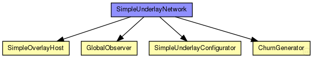
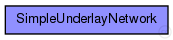

This documentation is released under the Creative Commons license
This documentation is released under the Creative Commons licenseThe SimpleUnderlay ned-file
See also: SimpleUnderlayConfigurator
Author: Stephan Krause, Bernhard Heep

The following diagram shows usage relationships between types. Unresolved types are missing from the diagram. Click here to see the full picture.
The following diagram shows inheritance relationships for this type. Unresolved types are missing from the diagram. Click here to see the full picture.
| Name | Value | Description |
|---|---|---|
| isNetwork |
| Name | Type | Default value | Description |
|---|---|---|---|
| underlayConfigurator.terminalTypes | string |
list of terminal types |
|
| underlayConfigurator.churnGeneratorTypes | string |
a list of churn generators to be used |
|
| underlayConfigurator.transitionTime | double |
time to wait before measuring after init phase is finished |
|
| underlayConfigurator.measurementTime | double |
duration of the simulation after init and transition phase |
|
| underlayConfigurator.gracefulLeaveDelay | double |
time between prekill and removal from overlay |
|
| underlayConfigurator.gracefulLeaveProbability | double |
probability of gracefull leave |
|
| underlayConfigurator.fieldSize | double |
maximum x/y-coordinate for nodes |
|
| underlayConfigurator.nodeCoordinateSource | string |
name of xml-file with coordinates of nodes |
|
| underlayConfigurator.sendQueueLength | int |
send-queue length in bytes (0 = infinite) |
|
| underlayConfigurator.fixedNodePositions | bool |
put nodes on fixed coordiantes in playground |
|
| underlayConfigurator.useIPv6Addresses | bool | ||
| churnGenerator.targetOverlayTerminalNum | int |
number of nodes after init phase |
|
| churnGenerator.initPhaseCreationInterval | double |
node creation interval in init phase |
|
| churnGenerator.noChurnThreshold | double |
if the lifetimeMean of a specific churn generator exceeds this, NoChurn is used instead |
|
| churnGenerator.channelTypes | string |
used (tx) access technologies (from common/channels.ned) |
|
| churnGenerator.channelTypesRx | string |
used (rx) access technologies (from common/channels.ned) |
|
| globalObserver.globalNodeList.maliciousNodeProbability | double |
probability for a node to be malicious on creation |
|
| globalObserver.globalNodeList.maliciousNodeChange | bool |
dynamically change number of malicious nodes |
|
| globalObserver.globalNodeList.maliciousNodeChangeStartTime | double |
simTime at which nodes begin to become malicious |
|
| globalObserver.globalNodeList.maliciousNodeChangeRate | double |
number of nodes to change to malicious compared to all nodes |
|
| globalObserver.globalNodeList.maliciousNodeChangeInterval | double |
time between two node changes to malicious |
|
| globalObserver.globalNodeList.maliciousNodeChangeStartValue | double |
minimum amount of malicious nodes in the peerSet |
|
| globalObserver.globalNodeList.maliciousNodeChangeStopValue | double |
maximum amount of malicious nodes in the peerSet |
|
| globalObserver.globalNodeList.maxNumberOfKeys | int |
maximum number of overlay keys the bootstrap oracle handles |
|
| globalObserver.globalNodeList.keyProbability | double |
probability of keys to be owned by nodes |
|
| globalObserver.globalParameters.rpcUdpTimeout | double |
default timeout value for direct RPCs |
|
| globalObserver.globalParameters.rpcKeyTimeout | double |
default timeout value for routed RPCs |
|
| globalObserver.globalParameters.printStateToStdOut | bool |
print overlay ready messages to std::cout |
|
| globalObserver.globalParameters.topologyAdaptation | bool |
turn on topologyAdaptation (for demonstrator) |
|
| globalObserver.globalTraceManager.traceFile | string |
file name of the trace file |
|
| globalObserver.globalStatistics.outputMinMax | bool |
enable output of minimum and maximum for scalars |
|
| globalObserver.globalStatistics.outputStdDev | bool |
enable output of standard deviation for scalars |
|
| globalObserver.globalStatistics.measureNetwInitPhase | bool |
fetch statistics in init phase? |
|
| globalObserver.globalStatistics.globalStatTimerInterval | double |
interval length of periodic statistic timer |
|
| overlayTerminal.udp.constantDelay | double |
constant delay between two peers |
|
| overlayTerminal.udp.useCoordinateBasedDelay | bool |
delay should be calculated from euklidean distance between two peers |
|
| overlayTerminal.udp.delayFaultType | string |
augment coordinate based delays with a realistic error, according to "Network Coordinates in the Wild", Figure 7 possible values: empty, "live_all", "live_planetlab", "simulation" |
|
| overlayTerminal.udp.jitter | double |
average amount of jitter in % |
|
| overlayTerminal.tcp.advertisedWindow | int | 14*this.mss |
in bytes, corresponds with the maximal receiver buffer capacity (Note: normally, NIC queues should be at least this size) |
| overlayTerminal.tcp.delayedAcksEnabled | bool | false |
delayed ACK algorithm (RFC 1122) enabled/disabled |
| overlayTerminal.tcp.nagleEnabled | bool | true |
Nagle's algorithm (RFC 896) enabled/disabled |
| overlayTerminal.tcp.limitedTransmitEnabled | bool | false |
Limited Transmit algorithm (RFC 3042) enabled/disabled (can be used for TCPReno/TCPTahoe/TCPNewReno/TCPNoCongestionControl) |
| overlayTerminal.tcp.increasedIWEnabled | bool | false |
Increased Initial Window (RFC 3390) enabled/disabled |
| overlayTerminal.tcp.sackSupport | bool | false |
Selective Acknowledgment (RFC 2018, 2883, 3517) support (header option) (SACK will be enabled for a connection if both endpoints support it) |
| overlayTerminal.tcp.windowScalingSupport | bool | false |
Window Scale (RFC 1323) support (header option) (WS will be enabled for a connection if both endpoints support it) |
| overlayTerminal.tcp.timestampSupport | bool | false |
Timestamps (RFC 1323) support (header option) (TS will be enabled for a connection if both endpoints support it) |
| overlayTerminal.tcp.mss | int | 536 |
Maximum Segment Size (RFC 793) (header option) |
| overlayTerminal.tcp.tcpAlgorithmClass | string | "TCPReno" |
TCPReno/TCPTahoe/TCPNewReno/TCPNoCongestionControl/DumbTCP |
| overlayTerminal.tcp.sendQueueClass | string | "TCPVirtualDataSendQueue" |
TCPVirtualDataSendQueue/TCPMsgBasedSendQueue |
| overlayTerminal.tcp.receiveQueueClass | string | "TCPVirtualDataRcvQueue" |
TCPVirtualDataRcvQueue/TCPMsgBasedRcvQueue |
| overlayTerminal.tcp.recordStats | bool | true |
recording of seqNum etc. into output vectors enabled/disabled |
| overlayTerminal.tcp.constantDelay | double |
constant delay between two peers |
|
| overlayTerminal.tcp.useCoordinateBasedDelay | bool |
delay should be calculated from euklidean distance between two peers |
|
| overlayTerminal.tcp.delayFaultType | string |
augment coordinate based delays with a realistic error, according to "Network Coordinates in the Wild", Figure 7 possible values: empty, "live_all", "live_planetlab", "simulation" |
|
| overlayTerminal.tcp.jitter | double |
average amount of jitter in % |
|
| overlayTerminal.cryptoModule.keyFile | string |
the name of the file containing the public key pair used to sign messages |
|
| overlayTerminal.neighborCache.rpcUdpTimeout | double |
default timeout value for direct RPCs |
|
| overlayTerminal.neighborCache.rpcKeyTimeout | double |
default timeout value for routed RPCs |
|
| overlayTerminal.neighborCache.optimizeTimeouts | bool |
calculate timeouts from measured RTTs and network coordinates |
|
| overlayTerminal.neighborCache.rpcExponentialBackoff | bool |
if true, doubles the timeout for every retransmission |
|
| overlayTerminal.neighborCache.debugOutput | bool |
enable debug output |
|
| overlayTerminal.neighborCache.enableNeighborCache | bool |
use neighbor cache for reducing ping traffic? |
|
| overlayTerminal.neighborCache.rttExpirationTime | double |
expiration of the validity of the measured rtts |
|
| overlayTerminal.neighborCache.maxSize | double |
maximum size of the cache |
|
| overlayTerminal.neighborCache.rttHistory | int | ||
| overlayTerminal.neighborCache.timeoutAccuracyLimit | double | ||
| overlayTerminal.neighborCache.defaultQueryType | string | ||
| overlayTerminal.neighborCache.defaultQueryTypeI | string | ||
| overlayTerminal.neighborCache.defaultQueryTypeQ | string | ||
| overlayTerminal.neighborCache.doDiscovery | bool | ||
| overlayTerminal.neighborCache.ncsType | string | ||
| overlayTerminal.neighborCache.ncsSendBackOwnCoords | bool | ||
| overlayTerminal.neighborCache.gnpDimensions | int |
gnp settings |
|
| overlayTerminal.neighborCache.gnpCoordCalcRuns | int | ||
| overlayTerminal.neighborCache.gnpLandmarkTimeout | double | ||
| overlayTerminal.neighborCache.npsMaxLayer | int |
nps settings |
|
| overlayTerminal.neighborCache.vivaldiShowPosition | bool |
vivaldi settings |
|
| overlayTerminal.neighborCache.vivaldiErrorConst | double | ||
| overlayTerminal.neighborCache.vivaldiCoordConst | double | ||
| overlayTerminal.neighborCache.vivaldiDimConst | double | ||
| overlayTerminal.neighborCache.vivaldiEnableHeightVector | bool | ||
| overlayTerminal.neighborCache.svivaldiLossConst | double |
svivaldi settings |
|
| overlayTerminal.neighborCache.svivaldiLossResetLimit | double | ||
| overlayTerminal.neighborCache.simpleNcsDelayFaultType | string |
simpleNcs settings |
|
| overlayTerminal.bootstrapList.rpcUdpTimeout | double |
default timeout value for direct RPCs |
|
| overlayTerminal.bootstrapList.rpcKeyTimeout | double |
default timeout value for routed RPCs |
|
| overlayTerminal.bootstrapList.optimizeTimeouts | bool |
calculate timeouts from measured RTTs and network coordinates |
|
| overlayTerminal.bootstrapList.rpcExponentialBackoff | bool |
if true, doubles the timeout for every retransmission |
|
| overlayTerminal.bootstrapList.debugOutput | bool |
enable debug output |
|
| overlayTerminal.bootstrapList.mergeOverlayPartitions | bool |
if true, detect and merge overlay partitions |
|
| overlayTerminal.bootstrapList.maintainList | bool |
maintain a list of bootstrap candidates and check them periodically |
// // The SimpleUnderlay ned-file @see SimpleUnderlayConfigurator // // @author Stephan Krause, Bernhard Heep // network SimpleUnderlayNetwork { parameters: //@display("bgb=4000,4000"); // uncomment for large canvas submodules: underlayConfigurator: SimpleUnderlayConfigurator { @display("p=70,130"); } churnGenerator[0]: ChurnGenerator { @display("p=70,210,column"); } globalObserver: GlobalObserver { @display("p=70,50"); } overlayTerminal[0]: SimpleOverlayHost { @dynamic; } }
This documentation is released under the Creative Commons license